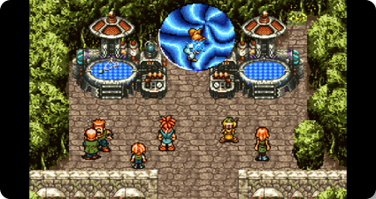
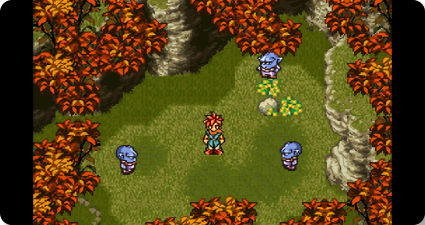
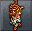
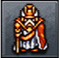
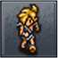
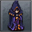

Se você não notou ou não está familiarizado com Chrono Trigger, há 13
conquistas, todas correspondendo a um final diferente. Tentarei manter
isso o mais leve possível em spoilers, mas aconselho terminar o jogo
naturalmente antes de tentar caçar todos os finais



Além do Tempo
Derrote Lavos após reviver Crono no Death Peak.
Variações
Se você poupou Magus, ele irá aparecer. Caso contrário, Frog
irá aparecer como humano.
Caso você tenha batido a Epoch em Lavos, Crono e Marle irão
flutuar em balões. Se isso não acontecer, o grupo irá fazer
uma imagem no tempo.
Dependendo de quantos gatos Crono tem (você pode ganhar mais
gatos dando comida ao seu gato), eles vão correr em direção
ao Portal
Se você salvou a mãe de Lucca, Lara, ela estará com uma boa
saúde na cena final do jogo.
Caso você tenha salvou o chanceler, ele vai aparecer na sala
do trono ao invés de Pierre
Se você não conversou com Robo sobre a “entidade” depois do
Sunken Desert, Marle vai mencionar que ela está convicta que
uma força maior quer juntar-se a você para conhecer estes
eventos. Se você conversou, entretanto, ela vai mencionar
esta conversa.
A forma mais simples de obter este final é bater a Epoch em
Lavos voando até 1999 AD ou pegando o telepod na feira como de
costume.
Epílogo do Sonho
Nesse final você precisa derrotar o Dream Devourer. Após
derrotá-lo, ele vai te acertar com uma espécie de raio e então o
Dream Devourer estará pronto para destruir toda a existência
quando Magus do Futuro consegue acordar Schala, que transporta o
seu grupo de volta para o tempo dele.
Schala então vai dar uma discurso sobre como ela mudou e mandar
Magus do Futuro para onde ele foi. Magus então vai acordar e
recuperar-se da amnésia dele. Depois dos créditos rolarem, você
verá uma cutscene nova e então Crono vai ganhar a Dreamseeker, a
arma mais poderosa dele.
O Projeto Sonho
Derrote Lavos no Ocean Palace
o New Game + é uma funcionalidade desbloqueada após você
terminar o jogo pela primeira vez. Ao iniciar um NG+, você pode
começar uma nova partida mantendo muitos dos itens, equipamentos
e níveis de seus personagens da jogada anterior.
O terceiro dos finais de Chrono Trigger, é provavelmente o mais
difícil de todos. Nele, você precisa derrotar Lavos no Ocean
Palace (na luta em que você deveria ser derrotado por ele) ou
então logo no começo do New Game+, quando você controla apenas
Crono e Marle.

O Sucessor de Guardia
Derrote Lavos após salvar Leene e Marle, mas antes de visitar o
End of Time
Desafie Lavos usando o Telepod assim que você retornar de 600 AD
pela primeira vez. Você terá, entretanto, apenas Crono e Marle no
grupo.
Neste final, Crono, Marle e Lucca irão ao Castelo e verão o Rei e
a filha dele pulando como sapos.
Boa noite
Derrote Lavos após visitar o End of Time, mas antes de retornar
à Idade Média
Use o balde no End of Time quando você chegar lá pela primeira vez
ou em qualquer ponto antes de voltar a 600 AD pela segunda vez. O
portão na Feira também funciona para ativar o quinto dos finais de
Chrono Trigger.
Neste final, um Nu, um Sapo e Kiwala irão dormir enquanto os
créditos do jogo passam na tela.
Reunião
Derrote Lavos enquanto Crono ainda estiver morto
Variações
Pequenas diferenças relacionadas a Gaspar dependendo se você
recebe o Time Egg e o Clone de Crono
Se você poupou Magus, ele vai aparecer. Em caso contrário,
Frog irá aparecer como Humano.
Se você bateu a Epoch em Lavos, Lucca irá mexer no Telepod
para encontrar-se com Crono. Em caso contrário, o grupo irá
fazer mais uma viagem pelo tempo.
Caso você tenha salvo a mãe de Lucca, Lara, ela estará com
uma boa saúde na cena final do jogo.
Caso você tenha salvou o chanceler, ele vai aparecer na sala
do trono ao invés de Pierre
Se você não conversou com Robo sobre a “entidade” depois do
Sunken Desert, Marle vai mencionar que ela está convicta que
uma força maior quer juntar-se a você para conhecer estes
eventos. Se você conversou, entretanto, ela vai mencionar
esta conversa.
O Herói Lendário
Derrote Lavos após chegar à Idade Média, mas antes de obter o
Hero’s Badge de Tata
Termine o jogo na sua segunda ida a 600 AD enquanto todo mundo
ainda acha que Tata é o herói, mas antes dele descobrir que ele é
uma fraude em Denadaro mountains. Depois de algumas cenas com Robo
no futuro, Tata irá desafiar o castelo de Magus, e encontrar uma
companhia diferente.

O Passado Desconhecido
Derrote Lavos após obter o Hero’s Badge de Tata, mas antes da
Gate Key ser roubada na pré-história
Derrote Lavos após obter a medalha de herói de Tata, e antes de
viajar para 65M BC pela primeira vez para obter a dreamstone. Você
verá várias cenas sobre os habitantes da pré-história para mostrar
o que você perdeu, além de outras cenas aleatórias com
personagens.
Pessoas da Época
Derrote Lavos após obter a Gate Key, mas antes de devolver
Masamune a Frog
Para liberar o oitavo dos finais de Chrono Trigger, derrote Lavos
após sua primeira viagem para 65M BC, com a chave, entretanto,
antes de dar a Masamune para Frog. Este é um dos piores finais do
jogo.
O Juramento
Derrote Lavos após devolver a Masamune para Frog, mas antes de
enfrentar Magus
Derrote Lavos após devolver a Masamune consertada a Frog, mas
antes de enfrentar Magus. Neste final você verá Lucca consertando
Robo e Frog indo até o castelo de Magus e então derrotando os
capangas dele em sucessão até a luta final contra Magus acontecer
enquanto os créditos rolam.
Era dos dinossauros
Derrote Lavos após enfrentar Magus, mas antes de enfrentar Azala
Como os répteis derrotaram os humanos, todos os personagens do
jogo se tornam répteis, exceto Green Ambler, que continua sendo
humano.

O que o Profeta Busca
Derrote Lavos após enfrentar Azala, mas antes Schala abrir a
porta selada
Basicamente em qualquer ponto de 12000 BC até antes da batalha
contra Lavos em que você deveria ser derrotado com uma exceção:
derrotar Lavos depois de chegar a 12000 BC antes de Zeal cair na
Terra.
Neste final, vemos Magus disfarçado do Profeta fazendo tudo o que
ele desejava fazer em 12000 BC sem a sua interferência.
Caminho da memória
Termine o jogo logo após Schala abrir a porta selada em Zeal
Use o Telepod ou balde certo, depois de ver Schala abrindo a
porta selada no Palácio do Zelo , mas antes de ligar o Pingente de
Marle .
Este final apresenta Lucca e Marle revisando os vários personagens
do jogo, dizendo o que realmente pensam sobre eles. É aqui que
você verá Crono dizer suas únicas duas falas de diálogo no jogo.